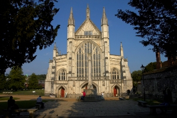

|
Winchester Cathedral Winchester Cathedral is one of the largest cathedrals in England, said to be the second longest in Europe. It is dedicated to the Holy Trinity, Saint Peter, Saint Paul and Saint Swithun and is the seat of the Bishop of Winchester and centre of the diocese of Winchester. www.winchester-cathedral.org.uk Romsey Abbey |
 |